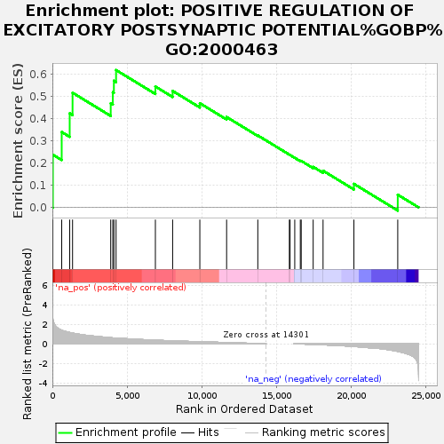
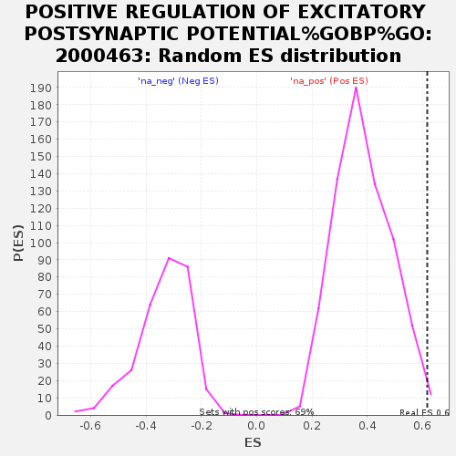

| Dataset | GvHD_A2_Ranks |
| Phenotype | NoPhenotypeAvailable |
| Upregulated in class | na_pos |
| GeneSet | POSITIVE REGULATION OF EXCITATORY POSTSYNAPTIC POTENTIAL%GOBP%GO:2000463 |
| Enrichment Score (ES) | 0.6163828 |
| Normalized Enrichment Score (NES) | 1.6034063 |
| Nominal p-value | 0.011527377 |
| FDR q-value | 1.0 |
| FWER p-Value | 1.0 |

| SYMBOL | RANK IN GENE LIST | RANK METRIC SCORE | RUNNING ES | CORE ENRICHMENT | |
|---|---|---|---|---|---|
| 1 | GRIN2A | 32 | 2.619 | 0.2366 | Yes |
| 2 | DLG4 | 623 | 1.385 | 0.3384 | Yes |
| 3 | GRIN2B | 1157 | 1.161 | 0.4222 | Yes |
| 4 | NLGN1 | 1349 | 1.104 | 0.5147 | Yes |
| 5 | STX1B | 3901 | 0.625 | 0.4672 | Yes |
| 6 | GRIN1 | 4041 | 0.606 | 0.5166 | Yes |
| 7 | GRIN2C | 4113 | 0.602 | 0.5684 | Yes |
| 8 | PRKCZ | 4259 | 0.593 | 0.6164 | Yes |
| 9 | SHANK3 | 6888 | 0.370 | 0.5426 | No |
| 10 | CUX2 | 8042 | 0.300 | 0.5227 | No |
| 11 | CHRNA7 | 9861 | 0.211 | 0.4676 | No |
| 12 | GRIN2D | 11652 | 0.125 | 0.4058 | No |
| 13 | PTEN | 13738 | 0.027 | 0.3230 | No |
| 14 | RELN | 15849 | 0.000 | 0.2368 | No |
| 15 | SHANK1 | 15896 | 0.000 | 0.2349 | No |
| 16 | WNT7A | 16209 | -0.003 | 0.2224 | No |
| 17 | RIMS2 | 16581 | -0.020 | 0.2091 | No |
| 18 | NLGN3 | 16641 | -0.022 | 0.2087 | No |
| 19 | NRXN1 | 17441 | -0.066 | 0.1821 | No |
| 20 | NLGN2 | 18102 | -0.106 | 0.1647 | No |
| 21 | RIMS1 | 20166 | -0.278 | 0.1057 | No |
| 22 | PTK2B | 23097 | -0.782 | 0.0570 | No |
